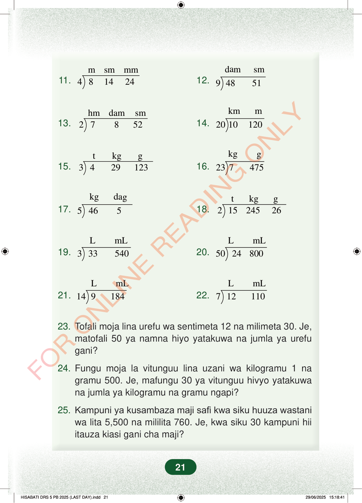

11.msmmm48142412.admsm9485113.hmdamsm2785214.kmm201012015.tkgg342912316.kgg23747517.kgdag546518.tkgg2152452619.LmL33354020.LmL502480021.LmL14918422.LmL71211023. Tofali moja lina urefu wa sentimeta 12 na milimeta 30. Je,matofali 50 ya namna hiyo yatakuwa na jumla ya urefugani?24. Fungu moja la vitunguu lina uzani wa kilogramu 1 nagramu 500. Je,mafungu 30 ya vitunguu hivyo yatakuwana jumla ya kilogramu na gramu ngapi?25. Kampuni ya kusambaza maji safi kwa siku huuza wastaniwa lita 5,500 na mililita 760. Je, kwa siku 30 kampuni hiiitauza kiasi gani cha maji?21
11. m sm mm 4 8 14 24 12. a d m sm 9 48 51
13. hm dam sm 2 7 8 52 14. km m 20 10 120
15. t kg g 3 4 29 123 16. kg g 23 7 475
17. kg dag 5 46 5 18. t kg g 2 15 245 26
19. L mL 3 33 540 20. L mL 50 24 800
21. L mL 14 9 184 22. L mL 7 12 110
23. Tofali moja lina urefu wa sentimeta 12 na milimeta 30. Je, matofali 50 ya namna hiyo yatakuwa na jumla ya urefu gani?
24. Fungu moja la vitunguu lina uzani wa kilogramu 1 na gramu 500. Je, mafungu 30 ya vitunguu hivyo yatakuwa na jumla ya kilogramu na gramu ngapi?
25. Kampuni ya kusambaza maji safi kwa siku huuza wastani wa lita 5,500 na mililita 760. Je, kwa siku 30 kampuni hii itauza kiasi gani cha maji?
21
11.Swali la 11 la kugawa 8 m 14 sm 24 mm kwa 4.4) 8 m 14 sm 24 mm12.Swali la 12 la kugawa 48 dam 51 sm kwa 9.9) 48 dam 51 sm13.Swali la 13 la kugawa 7 hm 8 dam 52 sm kwa 2.2) 7 hm 8 dam 52 sm14.Swali la 14 la kugawa 10 km 120 m kwa 20.20) 10 km 120 m15.3) 4 t 29 kg 123 g16.Swali la 16 la kugawa 7 kg 475 g kwa 23.23) 7 kg 475 g17.5) 46 kg 5 dag18.Swali la 18 la kugawa 15 t 245 kg 26 g kwa 2.2) 15 t 245 kg 26 g19.3) 33 L 540 mL20.Swali la 20 la kugawa 24 L 800 mL kwa 50.50) 24 L 800 mL21.14) 9 L 184 mL22.7) 12 L 110 mL23.Tofali moja lina urefu wa sentimeta 12 na milimeta 30.Je, matofali 50 ya namna hiyo yatakuwa na jumla ya urefu gani?24.Fungu moja la vitunguu lina uzani wa kilogramu 1 na gramu 500.Je, mafungu 30 ya vitunguu hivyo yatakuwa na jumla ya kilogramu na gramu ngapi?25.Kampuni ya kusambaza maji safi kwa siku huuza wastani wa lita 5,500 na mililita 760.Je, kwa siku 30 kampuni hii itauza kiasi gani cha maji?26.Kontena lenye mizigo lina uzani wa tani 29 na kilogramu 700 ukiondoa uzani wa kontena.Ikiwa kontena hilo limebeba vifaa 45 vya aina moja, je kila kifaa kina uzani gani?27.Shamba moja lina urefu wa m 225 na sm 90 na upana wa mita 50.Ikiwa shamba hili litagawanywa kwa watu watano kwa usawa kwa kufuata urefu, je kila mmoja atapata kiwanja chenye ukubwa gani?28.Kampuni ya kusindika maziwa ilitoa lita 2500 na mililita 500 za maziwa kwa wakazi 250 wa kijiji kimoja.Ikiwa maziwa yaligawanywa kwa usawa, kila mwanakijiji alipata maziwa kiasi gani?29.Kilogramu 60,000 za maharage ziligawiwa kwa usawa katika shule 25 za sekondari.Je, kila shule ilipata kilogramu ngapi za maharage?30.Watu 8 waligawiwa kilogramu 125 za mchele kwa usawa.Je, kila mtu alipata kilogramu na gramu ngapi za mchele?FOR ONLINE READING ONLY